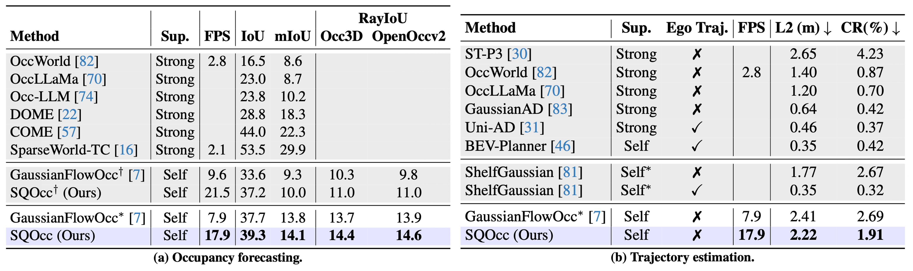

Results
Semantic Occupancy Estimation
On the Occ3D-nuScenes and OpenOccv2 datasets, SuperQuadricOcc surpasses previous methods based on voxel or Gaussian scene representations on both mIoU and RayIoU metrics, displaying the methods ability to accurately capture the scene geometry and semantics.Furthermore, the superquadric representation enables real-time inference with low memory usage of just 0.70 GB, more than doubling FPS while halving memory usage compared to prior methods.

Downstream Tasks
For occupancy forecasting and trajectory estimation, SuperQuadricOcc outperforms the Gaussian-based GaussianFlowOcc, demonstrating the effectiveness of the superquadric representation. Namely, for trajectory estimation, the compactness of superquadrics permits less collisions (CR metric), suggesting that the compact superquadric representation better preserves temporally useful free-space and object-extent structure than a larger set of local Gaussian primitives.
